Friday, 16 October, 17:30 – 19:30
Amazon Meets Berlin
Women-Led Solutions for the Cocoa Bioeconomy — with Ka'a Harmony Foundation
Drawing on stories from women-led cocoa cooperatives in the Amazon, an evening on when the cocoa bioeconomy can deliver on its promise of conservation, climate resilience, and equitable local development — and what a well-designed value chain could mean for communities and the forest alike. The first in Ka'a Harmony's series tracing Amazon products back to the communities behind them; free, donations welcome.
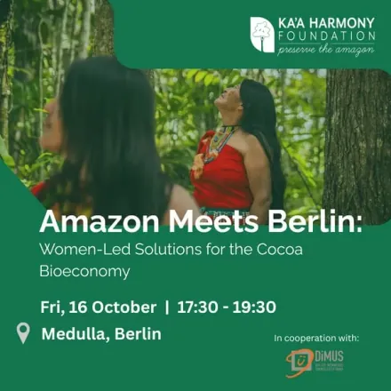
Thursday, 8 October, 18:30 – 21:00
Berlin 2050°
Building a City-Wide Heat Resilience Ecosystem
Building on the heat risk clinic at Public Vitality Camp, an evening on what a city-wide heat resilience strategy for Berlin would take — who has standing to act, which existing measures can be used, and how to coordinate across sectors — with insight from Madrid 2050° and Civic Ledger. Seeding Optionality Session #1, part of xCO's pop-up series at Medulla; in English, with some German support.
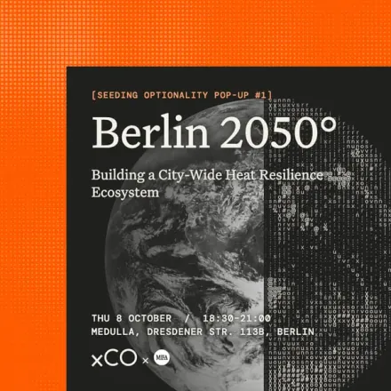
Friday, 18 September, 18:00 – 22:00
Public Vitality Field Assembly
Patterns, blind spots and emerging connections
The closing gathering of Public Vitality Camp 2026 — connecting inquiries across governance, infrastructure, ecology, and technology through a Planetary Civics lens to ask which capacities and responsibilities need to be held collectively. Hosted at Medulla with nextlearning, Dark Matter Labs & Planetary Civics; bring a drink and something to share.
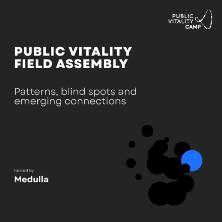
Friday, 18 September, 13:00 – 16:00
Life Repair Kit: Tools for Tough Times
With Lia Meißner
A hands-on lab on the inner resources, practices, and relationships that carry us through stress and change — pairing individual resilience with collective forms of support in times of external upheaval. Part of Public Vitality Camp; includes a short walk, weather permitting. Working language English.
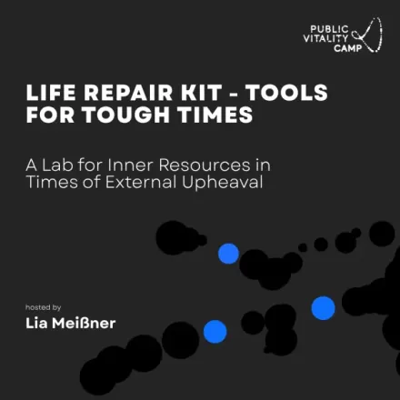
Friday, 18 September, 13:00 – 16:00
Planetary Berlin: Governing Hydrological Continuities
With Prateek Shankar (Dark Matter Labs)
A scenario-based session on water governance across the Berlin–Brandenburg region — reading the city's Masterplan Wasser to trace how water, nutrients, and carbon move through systems that cross institutional boundaries, and how governance might better account for downstream and long-term effects. Part of Public Vitality Camp.
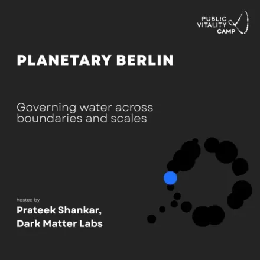
Friday, 18 September, 10:00 – 12:00
Risiken im Zusammenspiel
With Johanna Siebenlist (UBA) & Caroline Paulick-Thiel (P4T)
A scenario-based working session on climate adaptation under compound events — where heat, drought, or flooding coincides with energy scarcity, strained supply systems, or geopolitical shifts — mapping the interdependencies that future climate-risk analysis should better account for. Part of Public Vitality Camp; working language German.
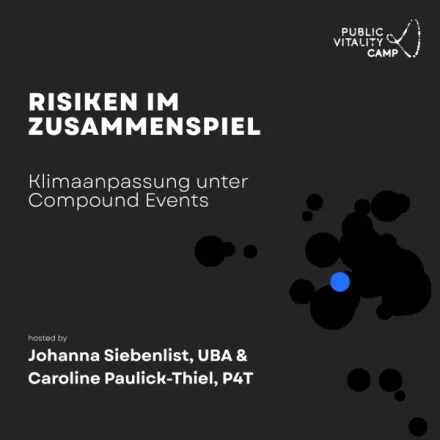
Tuesday, 4 August, 18:00 – 21:30
Investing in civic infrastructure
With Dark Matter Labs & Politics for Tomorrow
A working conversation on how civic technology stays sustainable beyond funding cycles — featuring Civic Ledger, which turns plain-language civic requests into structured, conditional agreements, with live demonstrations and open discussion on who governs civic data.
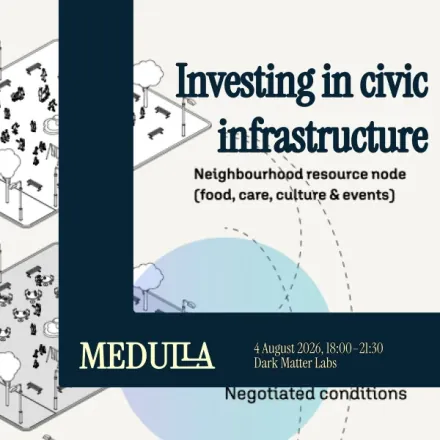
Wednesday, 15 July, 18:00 – 20:00
One Resilient Earth: Berlin Community Get-Together
An evening with One Resilient Earth
An informal introduction to One Resilient Earth's work on transformative, regenerative approaches to climate resilience — followed by open conversation and reconnection among practitioners, neighbours, and friends.
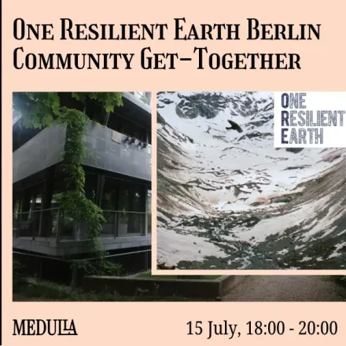
Thursday, 2 July, 18:00 – 21:00
From Lines to Loops: shifting beyond the dominant rhythms of time
With Ida Persson, sahibzada mayed & Christine Flanagan (DesignShifts)
Move through a series of timescapes beyond linear time — ancestral, ecological, and seasonal rhythms the dominant clock was never designed to hold — and reimagine time as a living, looping relationship, emergent and full of possibility.
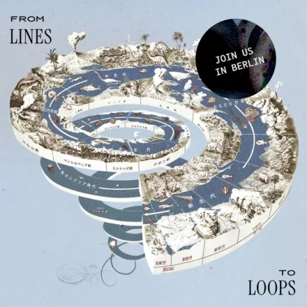
Thursday, 2 July, 12:00 – 14:00
Medulla Show & Tell: Lunch with Edgar Pieterse
With Edgar Pieterse (African Centre for Cities, University of Cape Town)
A new Medulla format — friends passing through Berlin pause to share a thread of their work over lunch. Bring lunch, a story, and an artifact; no agenda beyond good company and shared curiosity.
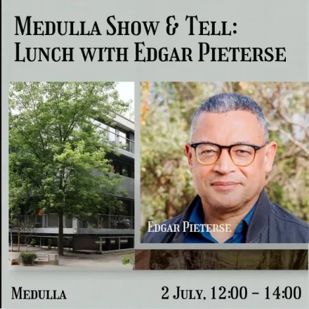
Friday, 12 June, 19:00 – 21:00
Governance Beyond Alignment
Bioregioning and the work of holding difference
An evening on bioregioning and the work of holding difference — readings, reflection, and conversation across governance, ecology, and civic practice.
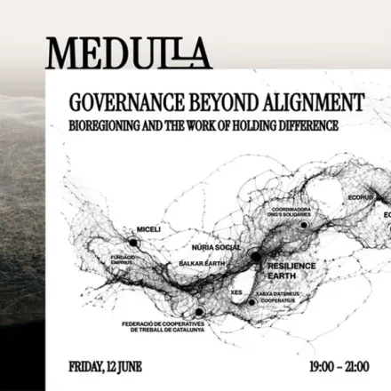
Tuesday, 9 June, 19:00 – 22:00
Transforming public sector from within
Book Launch with Lindsay Cole in conversation with Sylvine Bois-Choussy (La 27e Région)
Join us for the Berlin pre-release of Transforming the Public Sector From Within, a book by Lindsay Cole, PhD to be published by the University of Toronto Press. This will be an evening of connection, readings, reflection, and conversation on the lived realities of transformation work inside public systems.
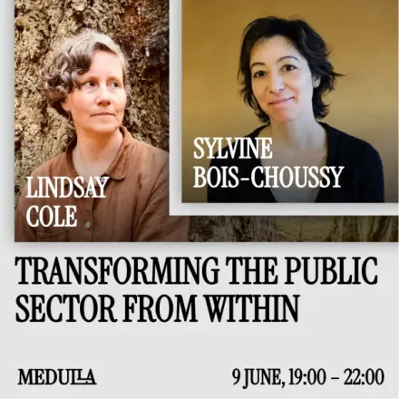